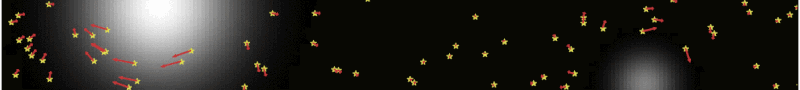

A list of selected recent papers may be found below. A full list of publications may be found on INSPIRE or ADS.
Statistical Detection of Dark Matter Substructure
The distribution of matter on small scales contains a wealth of information about the underlying particle physics and nature of dark matter. A common theme in my research has been leveraging the collective, statistical effect of a large number of small dark matter structures—subhalos—in various astrophysical systems in order to extract this information.
2020
The Power of Halometry
Mishra-Sharma, S.,
Van Tilburg, K.,
and
Weiner, N.
Phys. Rev. D,
2020
2019
Mining for Dark Matter Substructure: Inferring subhalo population properties from strong lenses with machine learning
Astrophys. J.,
2019
Cosmological Implications of Dark Photons
The existence of dark photons—a well-motivated extension of the Standard Model of particle physics—would leave a characteristic imprint in current and upcoming cosmological observations. I have recently explored new ways to look for signatures of dark photons in measurements of the Cosmic Microwave Background and the 21-cm line emission intensity.
2020
Edges and Endpoints in 21-cm Observations from Resonant Photon Production
Caputo, A.,
Liu, H.,
Mishra-Sharma, S.,
Pospelov, M.,
Ruderman, J.T.,
and Urbano, A.
arXiv preprint,
2020
Modeling Dark Photon Oscillations in Our Inhomogeneous Universe
Caputo, A.,
Liu, H.,
Mishra-Sharma, S.,
and Ruderman, J.T.
Phys. Rev. D,
2020
Dark Photon Oscillations in Our Inhomogeneous Universe
Caputo, A.,
Liu, H.,
Mishra-Sharma, S.,
and Ruderman, J.T.
Phys. Rev. Lett.,
2020
Indirect Searches for Dark Matter
Signatures of non-minimal interaction between the standard and dark sectors can show up in a variety of astrophysical systems, with Weakly Interacting Massive Particle (WIMP) dark matter in particular producing observable signals in gamma rays. I am interested in developing new methods and search strategies to look for such signatures in gamma-ray data, using targets both in the Milky Way and beyond.
2020
Semi-parametric γ-ray modeling with Gaussian processes and variational inference
Machine Learning and the Physical Sciences Workshop at NeurIPS 2020,
2020
Harnessing the Population Statistics of Subhalos to Search for Annihilating Dark Matter
Somalwar, J.J.,
Chang, L.J.,
Mishra-Sharma, S.,
and
Lisanti, M.
Astrophys. J.,
2020
Foreground Mismodeling and the Point Source Explanation of the Fermi Galactic Center Excess
Buschmann, M.,
Rodd, N.L.,
Safdi, B.R.,
Chang, L.J.,
Mishra-Sharma, S.,
Lisanti, M.,
and Macias, O.
Phys. Rev. D,
2020
Characterizing the nature of the unresolved point sources in the Galactic Center: An assessment of systematic uncertainties
Chang, L.J.,
Mishra-Sharma, S.,
Lisanti, M.,
Buschmann, M.,
Rodd, N.L.,
and Safdi, B.R.
Phys. Rev. D,
2020
2018
Search for dark matter annihilation in the Milky Way halo
Phys. Rev. D,
2018
Mapping Extragalactic Dark Matter Annihilation with Galaxy Surveys: A Systematic Study of Stacked Group Searches
Phys. Rev. D,
2018
Search for Dark Matter Annihilation in Galaxy Groups
Phys. Rev. Lett.,
2018
2017
NPTFit: A code package for Non-Poissonian Template Fitting
Astron. J.,
2017